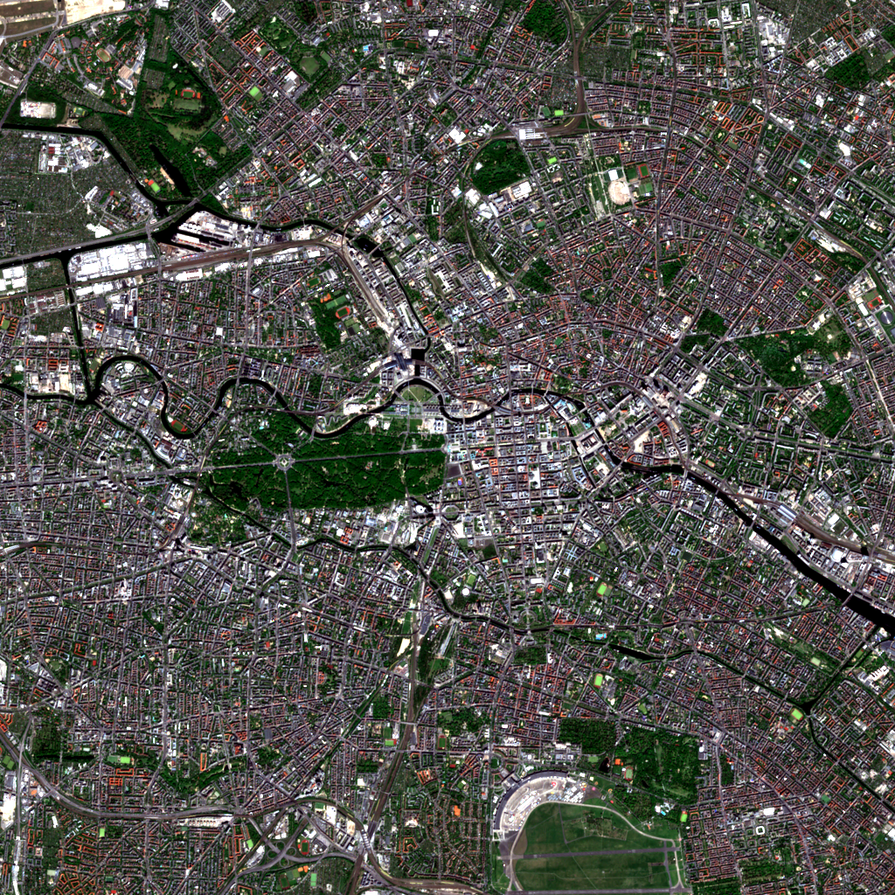
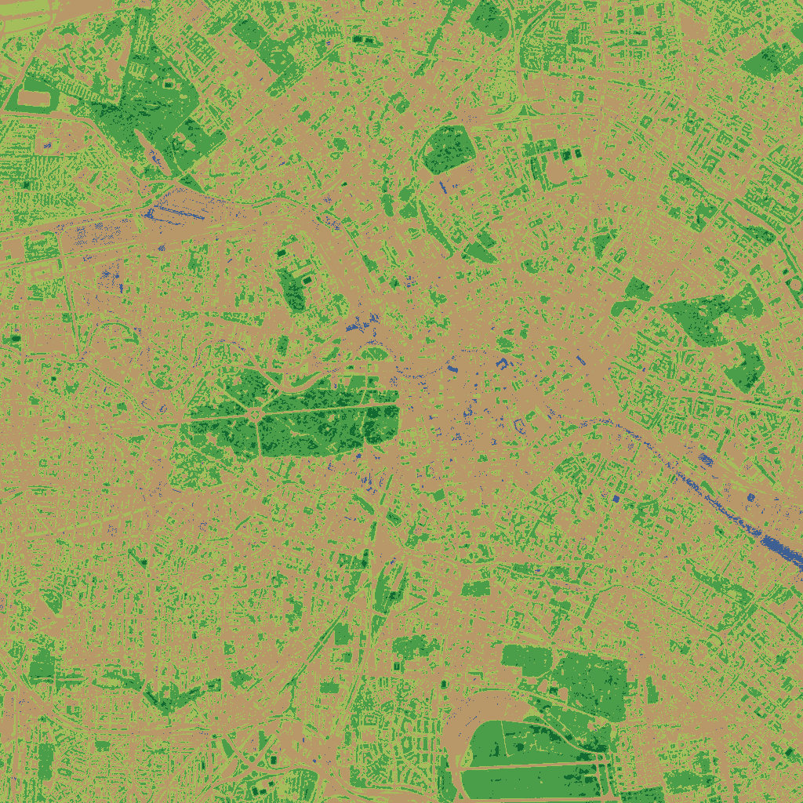
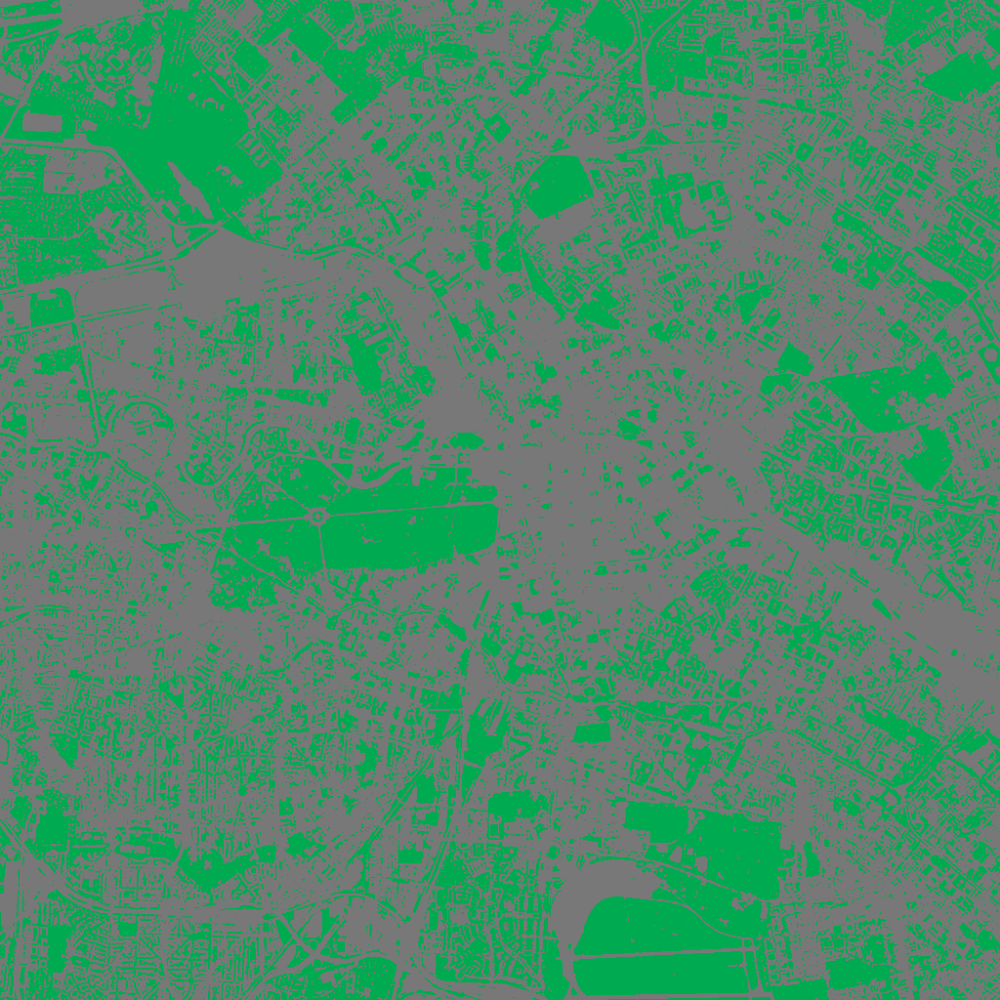
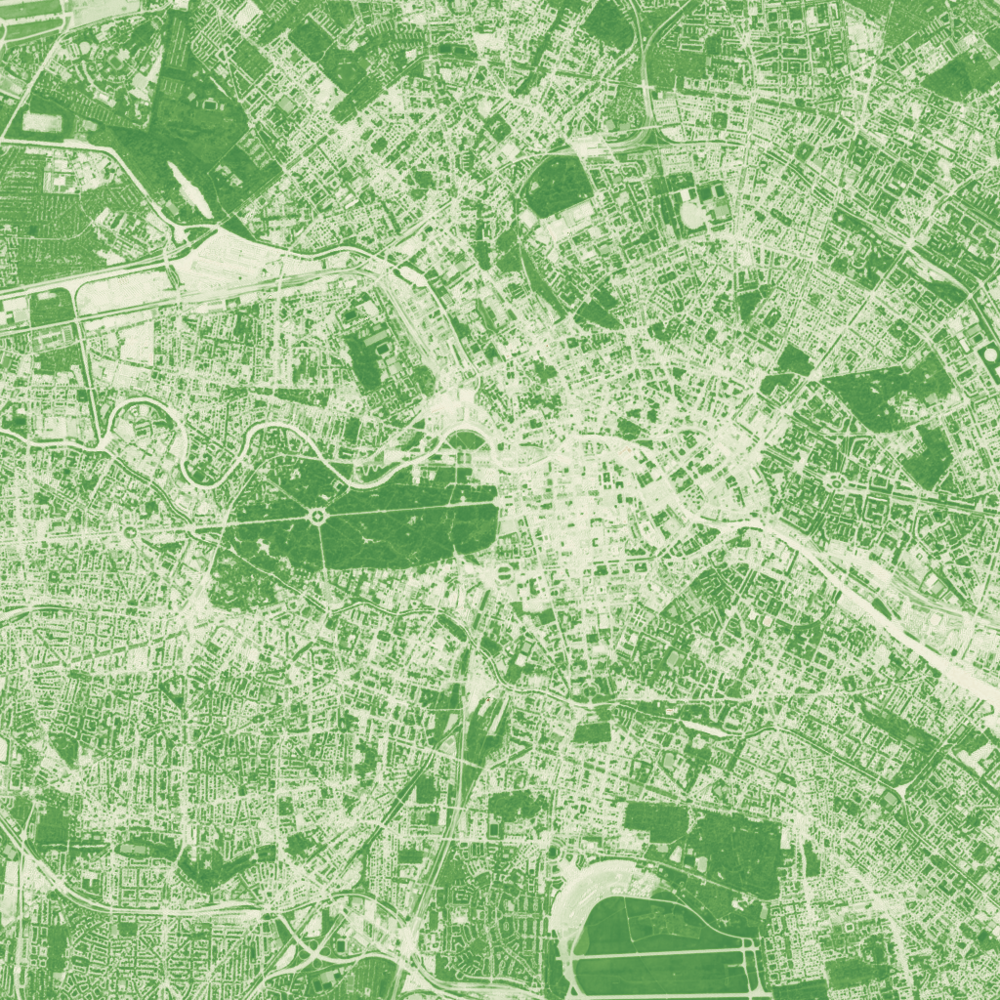
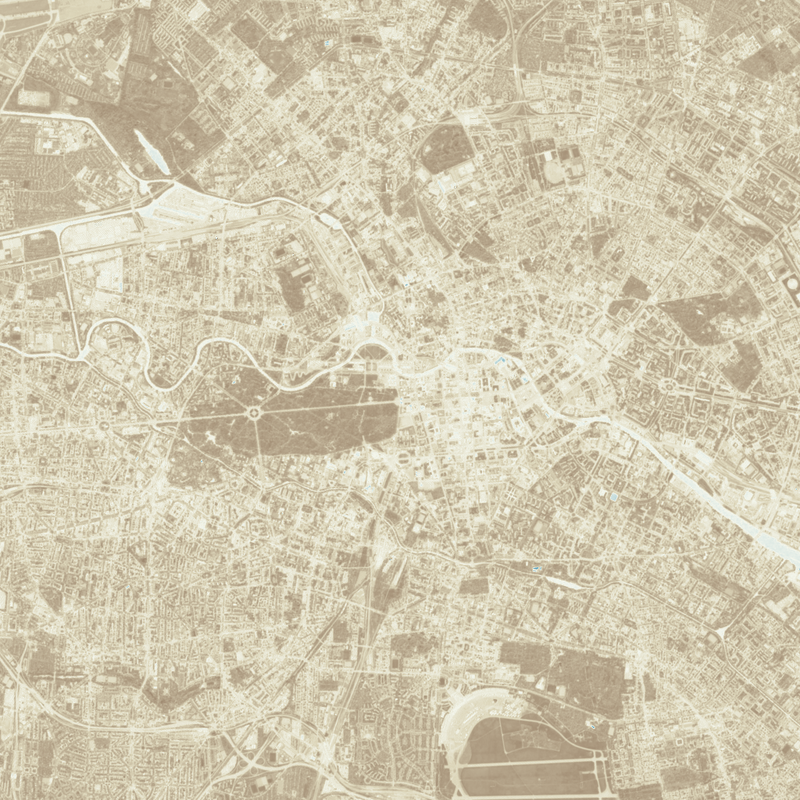

Berlin Deep Weather
Berlin Mitte / Tiergarten AOI at 52.5163, 13.3777, near Brandenburg Gate / central Tiergarten.
- Weather: Earth2Studio GFS forecast run 2026-05-25T12:00:00Z / lead 8 h, valid 2026-05-25T20:00:00Z / 2026-05-25T22:00:00+02:00.
- Pollution: Open-Meteo Air Quality forecast/API value for 2026-05-25T20:00:00Z / 2026-05-25T22:00:00+02:00.
- Surface imagery: Clay/Sentinel-2 L2A scene captured 2026-05-02T10:10:19.024000Z.
Clay / NDVI Context
Source scene 2026-05-02T10:10:19.024000Z; cloud 0.000625%; raster 1024 x 1024 px; bbox 10240 m; AOI 52.5163, 13.3777.
{kind=link}

{kind=link}

{kind=link}

Interpretation
Central Mitte / Tiergarten is refreshed for the Berlin 22:00 context. The nearest GFS grid point for 2026-05-25T22:00:00+02:00 shows 20.0 °C, light 2.28 m/s wind, and 66.9% relative humidity. The Open-Meteo air-quality grid reports PM10 at 8.9 µg/m³, PM2.5 at 5.3 µg/m³, NO2 at 10.8 µg/m³, and ozone at 66.0 µg/m³.
The weather pattern reads as a mild late-evening urban boundary layer: cooler than the previous warm evening update, more humid, and less windy. That means dispersion is still present but gentler, so near-road NO2 can show up more clearly even while particle levels remain low.
The shifted 1024 px Sentinel-2/Clay tile still provides the surface context, not a same-hour observation. Its NDVI mean is 0.2476, with 36.13% of pixels above NDVI 0.3, and the green/NIR NDWI mean is -0.2433 with only 0.95% positive NDWI pixels. These image-derived indices are satellite spectral proxies, not in-situ pollution measurements; weather and air quality describe 2026-05-25T22:00:00+02:00, while the Sentinel-2 surface scene is from 2026-05-02T10:10:19Z.
Spectral Evidence
These maps are satellite spectral proxies from the cached Sentinel-2/Clay tile. They are not in-situ pollution measurements.
Computed from bands B02, B03, B04, B08; source scene 2026-05-02T10:10:19.024000Z; raster 1024 x 1024 px. NDVI and NDWI are index values, not physical pollution units.
{kind=link}

{kind=link}

NDVI vegetation greenness
NDVI uses near-infrared and red light: (B08 NIR - B04 red) / (B08 NIR + B04 red). It usually ranges from -1 to 1; higher values indicate stronger live vegetation signal. This report counts NDVI above 0.3 as vegetation.
| lowest pixel value | -0.5484 |
|---|---|
| low-end p05 | 0.0395 |
| average NDVI | 0.2476 |
| median NDVI | 0.2142 |
| high-end p95 | 0.5416 |
| highest pixel value | 0.7016 |
| valid pixels | 100% |
| vegetation share (NDVI > 0.3) | 36.13% |
| low-vegetation share (NDVI < 0.2) | 47.30% |
NDWI green/NIR moisture proxy
Green/NIR NDWI uses green and near-infrared light: (B03 green - B08 NIR) / (B03 green + B08 NIR). Positive values can indicate water or moist surfaces, but in dense urban scenes this is only a surface-context proxy.
| lowest pixel value | -0.6813 |
|---|---|
| low-end p05 | -0.4754 |
| average NDWI | -0.2433 |
| median NDWI | -0.2255 |
| high-end p95 | -0.0577 |
| highest pixel value | 0.4877 |
| valid pixels | 100% |
| positive moisture/water share (NDWI > 0) | 0.95% |
| strong positive share (NDWI > 0.2) | 0.003% |
Unavailable SWIR indices
- NDBI: NDBI needs SWIR, usually Sentinel-2 B11 or B12. The cached Clay tile only has B02/B03/B04/B08.
- MNDWI: MNDWI needs SWIR. The cached Clay tile only has B02/B03/B04/B08.
- NDMI: NDMI needs SWIR, usually B11. The cached Clay tile only has B02/B03/B04/B08.
- NBR: NBR needs SWIR, usually B12. The cached Clay tile only has B02/B03/B04/B08.
Caveats
- These are satellite spectral proxies, not in-situ pollution measurements.
- Clouds, haze, cloud shadows, building shadows, water adjacency, and mixed pixels can bias index values.
- The Sentinel-2/Clay scene date can differ from the GFS and pollution valid time.
- At 10 m spatial resolution, narrow streets, trees, roofs, and water edges are often mixed within a pixel.
- No SWIR band is present in this cached tile, so SWIR-based built-up, moisture, and burn indices are not computed.
Nearest GFS Weather
| GFS run | 2026-05-25T12:00:00Z / lead 8 h |
|---|---|
| Valid time | 2026-05-25T20:00:00Z / 2026-05-25T22:00:00+02:00 |
| Grid coordinate | 52.5, 13.5 |
| Grid distance | 8.473 km |
| Status | fresh_fetch_or_cache_hit_from_gfs_connector |
| t2m_c | 19.98151855468751 |
| t2m_k | 293.1315185546875 |
| u10m_m_s | 1.69431396484375 |
| v10m_m_s | -1.5254370117187501 |
| wind_speed_10m_m_s | 2.2798372503724864 |
| r2m_pct | 66.9 |
Pollution Context
| Source | Open-Meteo Air Quality API |
|---|---|
| Kind | lightweight gridded air-quality forecast/API value |
| Timestamp UTC | 2026-05-25T20:00:00Z |
| Berlin time | 2026-05-25T22:00:00+02:00 |
| Grid coordinate | 52.5, 13.400002 |
| Grid distance | 2.359 km |
| pm10 | 8.9 μg/m³ |
| pm2_5 | 5.3 μg/m³ |
| nitrogen_dioxide | 10.8 μg/m³ |
| ozone | 66.0 μg/m³ |
How To Read The Numbers
Benchmarks here are orientation bands, not regulatory findings. Weather comes from the nearest GFS grid point, pollution from Open-Meteo Air Quality, and spectral indices from the Clay/Sentinel-2 surface tile.
Weather / Earth2Studio GFS
- GFS run / lead / valid time: when the forecast was started, how far ahead it predicts, and the exact hour the values describe.
- t2m_c / t2m_k: air temperature 2 m above ground, shown in Celsius and Kelvin. Roughly 15-25 °C is a comfortable outdoor band.
- u10m_m_s / v10m_m_s: east-west and north-south wind components. They are model variables; the combined wind speed is easier to read.
- wind_speed_10m_m_s: wind speed 10 m above ground. Below 5 m/s is usually light wind rather than a strong-wind situation.
- r2m_pct: relative humidity near 2 m. About 40-60% is a common comfort range; much lower reads dry, much higher reads humid.
- grid distance / status: distance from the AOI to the model grid cell and whether data came from cache or a fresh connector fetch. Smaller distance is better; this is context, not a street-corner reading.
Pollution / Open-Meteo Air Quality
- Source / kind / timestamp: tells us this is a gridded forecast/API value and the exact hour it describes, not an in-situ monitoring-station measurement.
- PM10: larger inhalable particles. In the European AQI orientation bands, 0-20 µg/m³ is good.
- PM2.5: fine particles that penetrate deeper into lungs. In the European AQI orientation bands, 0-10 µg/m³ is good.
- NO2: nitrogen dioxide, often traffic-combustion related. In the European AQI orientation bands, 0-40 µg/m³ is good.
- O3: ground-level ozone, often higher in sunny photochemical conditions. In the European AQI orientation bands, 0-50 µg/m³ is good and O3 100-130 µg/m³ is moderate.
- Benchmark: Open-Meteo's European AQI bands mark PM10 0-20, PM2.5 0-10, and NO2 0-40 µg/m³ as good; O3 100-130 µg/m³ is moderate.
Clay / Sentinel-2 Spectral Indices
- NDVI: vegetation greenness index from red and near-infrared light. It usually ranges from -1 to 1; higher means stronger live vegetation signal.
- NDVI benchmark: values around 0.2-0.3 often indicate sparse to moderate vegetation; 0.6-0.8 suggests dense green vegetation.
- Vegetation share: pixels above NDVI 0.3. This is a simple green-surface share, not a forest classification.
- NDWI green/NIR: water or surface-moisture proxy. Positive values can indicate water/moist surfaces; negative values usually mean vegetation, built surfaces, bare soil, or shadow.
- NDWI benchmark: 0 is the practical divider here. A small positive share means little open-water or wet-surface signal.
- p05 / p95 / valid pixels: p05 and p95 show the low and high ends while ignoring the most extreme 5% of pixels; valid pixels tells whether the whole tile was usable.
Caveats
This is a nearest Open-Meteo air-quality grid/API forecast value, not a physical OpenAQ station observation. It is suitable for pipeline smoke testing and context display, not for regulatory or street-canyon exposure claims.
https://air-quality-api.open-meteo.com/v1/air-quality?latitude=52.5163&longitude=13.3777&hourly=pm10%2Cpm2_5%2Cnitrogen_dioxide%2Cozone&start_date=2026-05-25&end_date=2026-05-25&timezone=UTC